Méthode pour construire, suivre et défendre un planning de chantier — tâches, liens, chemin critique, ressources et budget — et mode d’emploi complet du Planning BauGest (tablette et PC).
Exemples : génie civil (collecteur et réfection de route) et bâtiment (villa, gros œuvre). Édition octobre 2026.
Un bon planning répond à trois questions : quand chaque travail se fait, avec qui et quoi (équipes, machines, fournitures), et combien il coûte. Il doit être juste (enchaînements réels), tenable (ressources disponibles) et à jour.
Découpe le chantier en lots puis en tâches de 1 à 15 jours, chacune avec un résultat vérifiable sur place (« fouille tronçon 1 terminée »).
Calcule les durées : quantité ÷ (rendement de l’équipe par jour). Jamais « au feeling » pour les tâches longues ou chères.
Lie toutes les tâches : chaque tâche a au moins un prédécesseur et un successeur (sauf la première et la dernière). Pas de dates imposées sans raison.
Lis le chemin critique (barres rouges) : c’est là que chaque jour perdu retarde la fin. Mets tes meilleures équipes et ton attention sur ces tâches.
Affecte les ressources et regarde la charge : une pelle ne peut pas être à deux endroits. Supprime les surcharges (lissage, renfort ou autre méthode).
Fige la référence avant de démarrer. Elle sert à mesurer les glissements de délai et de coût.
Mets à jour quand quelque chose change : dates réelles, % d’avancement, heures et jours réalisés. Annonce un retard par écrit dès que tu le vois.
Règle d’orLe planning n’est pas une prévision météo : c’est un outil de décision. S’il ne t’aide pas à décider quoi faire lundi matin, il est trop détaillé, trop vague ou pas à jour.
Chapitre 2Les notions de base
Notion
Ce que c’est
Dans BauGest
Tâche
Un travail avec une durée, un début et une fin. Ex. « Pose collecteur tronçon 1 ».
Bouton Tâche ; barre bleue (rouge si critique).
Lot
Groupe de tâches (Terrassement, Collecteur, Chaussée…). Ses dates et son coût sont la somme de ses tâches.
Bouton Lot ; barre noire avec crochets.
Jalon
Un événement sans durée : début des travaux, « hors d’eau », route rendue au trafic, réception.
Bouton Jalon ; losange ◆.
Durée
Nombre de jours ouvrés (sans week-ends, fériés ni vacances du bâtiment).
Calendrier réglé par planning (canton, vacances, samedi).
Lien
Règle d’enchaînement entre deux tâches (FS, SS, FF, SF) avec un décalage éventuel.
Colonne Préd., ex. 2.2SS+2.
Chemin critique
La suite de tâches sans marge : si l’une glisse, la fin du chantier glisse.
Barres et flèches rouges.
Marge
Nombre de jours ouvrés dont une tâche peut glisser sans retarder la fin du chantier (marge totale).
Colonne Marge.
Ressource
Équipe, machine, sous-traitant ou fourniture, avec un tarif (et une capacité pour équipes et machines).
Onglet Ressources.
Référence
Photo du planning à une date (dates + budget). On compare toujours le planning actuel à cette photo.
Bouton Référence ; barres grises fines.
Avancement
Part du travail physiquement réalisée (%), pas le temps écoulé.
Fiche de la tâche ou bouton Réalisé.
Trois niveaux de planning
Niveau
Pour qui
Détail
Horizon
Planning directeur (contractuel)
Maître d’ouvrage, DT
Lots et jalons, 10–40 lignes
Tout le chantier
Planning d’exécution
Toi, chefs d’équipe
Tâches de 1–15 j, liens, ressources
Tout le chantier
Planning à 3 semaines
Contremaître, équipes
Tâches au jour près
3 semaines glissantes
Dans BauGest, fais un planning d’exécution par chantier. Pour le maître d’ouvrage, exporte-le en PDF en mode Mois avec les lots repliés mentalement (ou fais un 2e planning « directeur » plus simple avec Nouveau ; plusieurs plannings par chantier sont possibles). Pour les 3 semaines à venir, utilise le zoom Jour et le bouton Auj.
Chapitre 3Construire un planning en 8 étapes
Étape 1 · Rassembler les données
Contrat / conditions : date de début, délai, jalons contractuels, pénalités éventuelles.
Soumission : positions et quantités (elles donnent les durées et le budget).
Plans d’exécution et phasage imposé (circulation, accès, riverains, exploitation).
Contraintes : autorisations, coupures réseaux, livraisons longues (préfabriqués, armatures, menuiseries), météo (enrobés, bétonnage par temps froid), délais de séchage et de décoffrage fixés par l’ingénieur ou les fiches techniques.
Calendrier : canton, vacances du bâtiment, fermetures de l’entreprise.
Équipes et machines réellement disponibles pendant la période.
Étape 2 · Découper (lots puis tâches)
Découpe dans l’ordre où le chantier se construit, pas dans l’ordre de la soumission. Une tâche = une équipe, un lieu, un résultat contrôlable.
Mauvais découpage« Canalisations » 25 jours : impossible de suivre l’avancement, de lier finement, de voir où sont les équipes.
Règles : 1 à 15 jours ouvrés par tâche (découpe au-delà) ; découper par tronçon, étage ou zone pour permettre le travail en parallèle ; les petites tâches de moins d’une demi-journée se regroupent ; un jalon pour chaque date importante (début, réceptions, mise en service, fin).
Étape 3 · Calculer les durées
Durée (j ouvrés) = Quantité ÷ (Rendement par équipe et par jour × Nombre d’équipes)
Exemple de calcul (chiffres d’exemple, pas des valeurs de référence) : fouille blindée de 60 m ; si ton équipe fait 12 m par jour → 60 ÷ 12 = 5 jours. Avec deux équipes en parallèle sur deux fronts : 2,5 → arrondi 3 jours (arrondis toujours vers le haut).
Utilise tes propres rendements (chantiers passés, rapports journaliers, bons de régie) : tableau à remplir en annexe.
Ajoute les temps cachés : mise en place, repli, essais, réceptions, contrôles.
Les délais d’attente (séchage, cure, décoffrage) se mettent dans les liens (décalage), pas dans la durée de la tâche.
Intempéries : ne gonfle pas toutes les durées. Ajoute plutôt une tâche « Réserve intempéries » sur le chemin critique avant le jalon de fin, visible et discutable.
Étape 4 · Enchaîner (liens)
Pour chaque tâche, demande-toi : qu’est-ce qui doit être fait (ou commencé) avant ? Mets les liens logiques (techniques) d’abord ; les contraintes de ressources viennent ensuite (étape 6). Détail des liens au chapitre 4.
Étape 5 · Lire le résultat
BauGest calcule tout seul les dates, la fin du chantier et le chemin critique. Vérifie : la date de fin est-elle compatible avec le contrat ? Le chemin critique est-il logique (il passe par les gros travaux) ? Y a-t-il des tâches sans lien (marge énorme, souvent un oubli) ?
Étape 6 · Affecter les ressources et supprimer les surcharges
Affecte équipes et machines, puis regarde la charge dans l’onglet Ressources (chapitre 6).
Étape 7 · Vérifier le budget
Compare le total du planning avec la soumission / le devis. Un écart important signale une durée, un rendement ou un tarif faux (chapitre 7).
Étape 8 · Figer la référence et diffuser
Quand le planning est validé : bouton Référence → « Figer la référence », export PDF A3, transmission à la DT. À partir de là, on met à jour le planning actuel et on compare à la référence.
Chapitre 4Les liens entre tâches
Les quatre types de liens. Le décalage peut être négatif (avance) : FS−2 = B commence 2 jours avant la fin de A.
Quel lien choisir ?
Situation de chantier
Lien
Exemple
Il faut que ce soit fini avant
FS
Inspection caméra → fondation en grave
On attend un délai technique
FS + décalage
Bétonnage radier → murs : FS+2 (délai fixé par l’ingénieur)
Travail « à la suite » sur le même front (en chenille)
SS + décalage et FF + décalage
Fouille → pose : SS+2 et FF+1 (la pose suit la fouille à 2 j et finit 1 j après elle)
Deux travaux doivent finir ensemble
FF
Bordures et fondation finies avant l’enrobé
Une installation doit rester jusqu’au début de la suivante
SF
Signalisation provisoire maintenue jusqu’au début de la définitive
Le duo SS + FF : la clé des travaux linéairesPour une fouille suivie par une pose puis un remblayage, ne mets pas trois FS (trop long, irréaliste). Mets SS+n pour démarrer derrière l’équipe précédente et FF+m pour qu’elle ne finisse pas avant celle qu’elle suit. Dans BauGest, une tâche peut avoir deux liens vers la même tâche (un SS et un FF).
Pièges fréquents
Tâche orpheline (sans successeur) : elle peut glisser sans que la fin bouge → marge énorme et trompeuse. Relie-la au jalon de fin ou à la tâche suivante.
Dates forcées partout (« début au plus tôt ») : le planning ne réagit plus aux retards. Réserve-les aux vraies contraintes (autorisation, livraison, coupure).
Liens sur les lots : dans BauGest, les liens se font entre tâches, pas entre lots. Relie la dernière tâche d’un lot à la première du lot suivant.
Boucle (A attend B qui attend A) : BauGest la refuse et l’indique.
Liens « de confort » qui ne correspondent à rien sur le terrain : ils créent un faux chemin critique.
Chapitre 5Chemin critique et marges
BauGest calcule pour chaque tâche la date au plus tôt (aller : de la première à la dernière tâche) et la date au plus tard (retour : de la fin vers le début) sans retarder la fin. La différence est la marge totale.
Chemin critique en rouge (marge 0). « Commande » a 7 jours de marge.
Ce que ça change pour toi
Tâche critique en retard d’1 jour = fin du chantier en retard d’1 jour, sauf si tu rattrapes plus loin.
Une tâche avec marge peut glisser, mais la marge est partagée : si la tâche A consomme la marge, la tâche suivante B n’en a plus.
Le chemin critique change pendant le chantier : une tâche non critique qui prend beaucoup de retard devient critique. Regarde les barres rouges à chaque mise à jour.
Marge négative impossible dans BauGest : la fin recule automatiquement. Compare-la à la référence (« réf. … (+3 j) » à droite de la barre d’outils).
Pour raccourcir un chantierIl ne sert à rien d’accélérer une tâche qui a de la marge. On agit uniquement sur le chemin critique : plus d’équipes, travail en parallèle (SS au lieu de FS), découpage en tronçons, méthode plus rapide, samedi travaillé (réglage du planning).
Les heures par jour des équipes se règlent dans Réglages › Heures par jour (8,5 par défaut). Les ressources sont propres à chaque chantier.
Conseils pour bien définir les ressources
Une ressource « Équipe » = un groupe qui travaille ensemble (ex. équipe canalisation, capacité 4 personnes). Si tu as deux équipes distinctes, crée deux ressources.
Une machine rare (pelle, grue, finisseur) mérite sa propre ressource avec capacité 1 : c’est elle qui crée les vrais conflits.
Le tarif horaire d’équipe : prends le prix de revient de ton entreprise (pas le prix de vente) pour suivre le coût réel ; ou le prix de vente si tu veux comparer à la soumission. Reste cohérent sur tout le planning.
Lire la charge
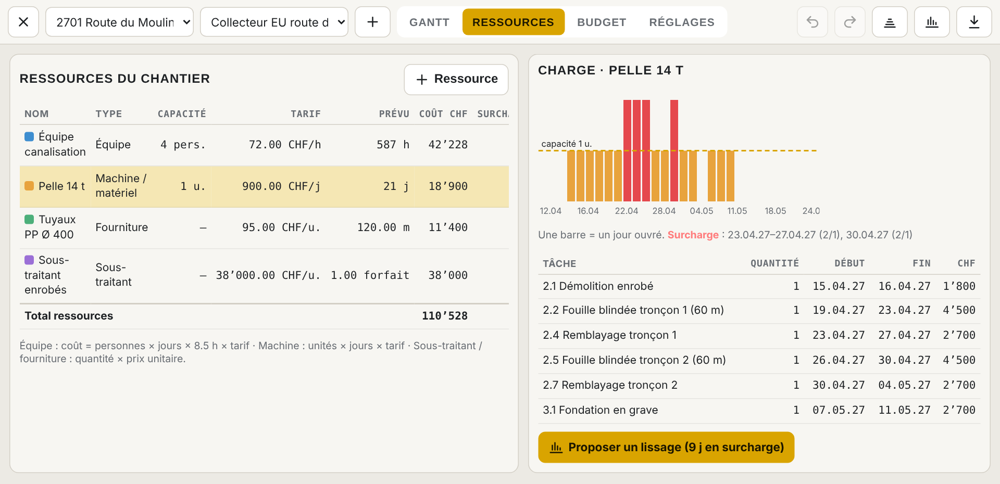
Onglet Ressources : la pelle (capacité 1) est demandée 2 fois certains jours → barres rouges et liste des périodes en surcharge.
Barres sous la ligne pointillée jaune = OK. Barres rouges = surcharge (plus de personnes ou de machines que disponibles).
Le tableau sous le graphique liste les tâches qui utilisent la ressource, avec leurs dates.
Planning long (plus de 70 jours) : une barre = une semaine (charge maximale du jour dans la semaine).
Supprimer une surcharge : 5 solutions
Solution
Effet sur le délai
Effet sur le coût
Quand l’utiliser
1. Lisser (décaler des tâches)
Nul si la tâche a de la marge, sinon retard
Neutre
Tâches avec marge
2. Renforcer (2e machine, personnes en plus)
Aucun retard
+ location / main-d’œuvre
Chemin critique, délai serré
3. Changer l’ordre (autre tronçon d’abord)
Souvent nul
Neutre
Travaux répétitifs
4. Changer la méthode (mini-pelle pour le remblayage, préfabriqué…)
Variable
Variable
Conflits répétés
5. Allonger la tâche avec moins de monde
Tâche plus longue
À peu près neutre
Tâches avec marge
Le lissage automatique de BauGest
Bouton Lisser (ou « Proposer un lissage » dans l’onglet Ressources). BauGest place les tâches dans l’ordre des liens, les critiques d’abord, et repousse une tâche non commencée jusqu’au premier jour où ses équipes et machines tiennent dans la capacité. Il ne touche jamais aux tâches commencées ni aux jalons.
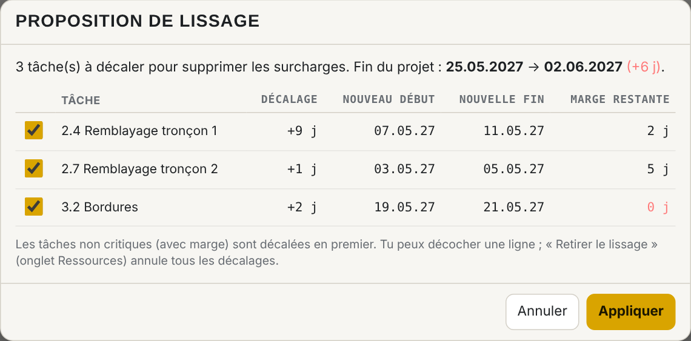
La proposition : décalage, nouvelles dates, marge restante et effet sur la fin du chantier. Décoche une ligne pour la refuser.
Lisser n’est pas gratuitIci le lissage supprime la surcharge mais repousse la fin de 6 jours. Avant d’appliquer, demande-toi si une 2e machine pendant quelques jours (solution 2) coûte moins que 6 jours de chantier en plus (installations, encadrement, pénalités).
Retirer le lissage (onglet Ressources) remet tous les décalages à zéro. Si tu déplaces toi-même une barre, son décalage de lissage est remplacé par ta date.
Chapitre 7Budget, réalisé et valeur acquise
Source du budget (Réglages › Source du budget)
Choix
Budget d’une tâche
Pour quoi
Ressources
Somme des coûts des ressources affectées
Suivi précis main-d’œuvre / machines
Montant saisi
Montant tapé dans la fiche de la tâche
Reprise simple des montants de la soumission
Ressources + montant
Les deux additionnés
Ressources + forfaits (essais, frais, divers)
Saisir le réalisé
Onglet Budget › bouton Réalisé de la tâche : une ligne par saisie (date, ressource, quantité). Équipes en heures, machines en jours, sous-traitants et fournitures en quantités, ou montant libre (facture). Le montant = quantité × tarif de la ressource. Règle aussi l’avancement % dans la même fenêtre.
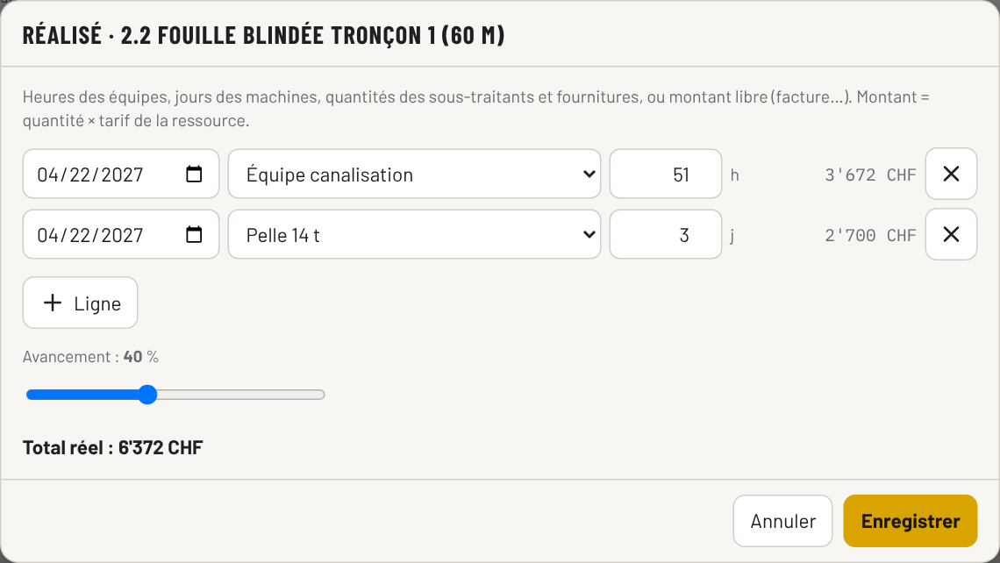
Saisie du réalisé d’une tâche (heures de l’équipe, jours de la pelle).
Source des chiffresLes heures et jours viennent de tes rapports journaliers et bons de régie BauGest. Saisis-les au même rythme que tes mises à jour du planning.
La valeur acquise expliquée simplement
À une date donnée (« Situation au »), BauGest compare trois montants :
Montant
Question
Calcul
PV · Prévu à date
Combien de travail aurait dû être fait ?
Budget de référence × part du temps prévu écoulée
VA · Valeur acquise
Combien de travail est fait (en budget) ?
Budget × avancement %
CR · Coût réel
Combien ça a coûté ?
Somme du réalisé saisi
VA sous PV = en retard ; CR au-dessus de VA = plus cher que prévu pour ce qui est fait.
Les indicateurs
Indicateur
Calcul
Lecture
Écart de coût
VA − CR
Négatif = dépassement
Écart de délai
VA − PV
Négatif = retard (en CHF de travail)
SPI (indice délai)
VA ÷ PV
1 = à l’heure ; 0,80 = on a fait 80 % de ce qui était prévu
CPI (indice coût)
VA ÷ CR
1 = dans le budget ; 0,90 = chaque franc dépensé ne rapporte que 90 ct de travail
Coût final estimé
Budget ÷ CPI
Où on finira si la tendance continue
Écart final estimé
Budget − coût final
Négatif = perte estimée
Exemple chiffré : budget 100 000 CHF. À date, il était prévu d’avoir fait 40 000 (PV). On a fait 30 % du travail → VA = 30 000. On a dépensé 36 000 (CR). SPI = 30 000 ÷ 40 000 = 0,75 (retard) ; CPI = 30 000 ÷ 36 000 = 0,83 (dépassement) ; coût final estimé = 100 000 ÷ 0,83 ≈ 120 000 CHF, soit une perte estimée de 20 000 CHF si rien ne change.
Condition pour que ça marcheUn avancement % honnête (ce qui est physiquement fait, mesuré en m, m³, pièces), et un réalisé saisi jusqu’à la même date. Sans référence figée, BauGest compare au planning actuel : fige la référence avant de démarrer.
Chapitre 8Suivre et rattraper un retard
Quand mettre à jour (au besoin)
Tu mets à jour quand un de ces déclencheurs se produit :
Une tâche critique commence ou finit à une autre date que prévu.
Un imprévu : intempéries, panne, découverte (conduite non répertoriée, mauvais terrain), livraison en retard.
Une modification de commande (travaux en plus ou en moins, phasage modifié).
Avant une séance de chantier où le délai sera discuté.
Avant une facturation ou une situation de travaux (pour la valeur acquise).
Au minimum une fois par mois, même si tout va bien, pour garder la main.
La mise à jour en 6 gestes
Pour chaque tâche commencée : Début réel et avancement %.
Pour chaque tâche finie : Fin réelle (l’avancement passe à 100 %).
Durées restantes fausses ? Corrige la durée des tâches en cours ou à venir.
Saisis le réalisé (heures, jours, quantités) jusqu’à la date de mise à jour.
Regarde la fin du chantier par rapport à la référence et les nouvelles barres rouges.
Contrôle les surcharges des 3 prochaines semaines (onglet Ressources).
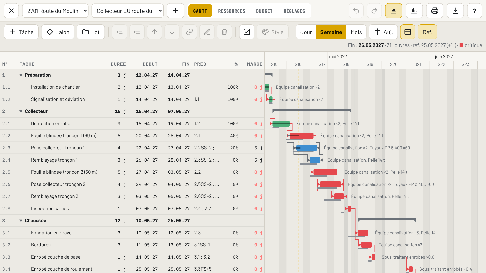
Planning mis à jour : barres vertes = terminées, trait noir dans la barre = avancement, barres grises fines = référence, « réf. 25.05.2027 (+1 j) » = glissement de la fin.
Repérer un retard
Contour orange pointillé sur une barre et ⚠ dans le tableau : tâche en retard (devait commencer et n’a pas de début réel, ou devait être finie et ne l’est pas).
Barre actuelle à droite de la barre grise de référence : glissement.
SPI < 1 dans l’onglet Budget.
Rattraper un retard : 5 options concrètes
Option
Comment dans BauGest
Coût
1. Renforcer le chemin critique (équipe ou machine en plus)
Réduire la durée de la tâche, ajouter la ressource
+ main-d’œuvre / location
2. Chevaucher des tâches (travail en chenille)
Remplacer un FS par SS+n et FF+m
Faible, demande de l’organisation
3. Découper pour ouvrir un 2e front
Scinder la tâche en tronçons, lier en parallèle
+ installation, + encadrement
4. Allonger le temps de travail
Réglages › Samedi travaillé ; durées réduites
Suppléments horaires, à valider
5. Changer de méthode
Nouvelles tâches et durées
Variable
À ne pas faireRaccourcir les durées « sur le papier » sans moyens en plus. Le planning redevient vert, le chantier reste en retard, et tu perds ta crédibilité à la prochaine séance.
Chapitre 9Communiquer le planning
Planning contractuel et planning de travail
Le planning contractuel (directeur) est remis au maître d’ouvrage / à la DT : peu de lignes, jalons clairs, dates engageantes. Le planning de travail (exécution) est ton outil interne : détaillé, avec ressources et coûts. Ne transmets pas ton planning interne avec les coûts : dans l’export PDF, seuls les dates et les ressources affectées apparaissent, pas les montants.
Présenter un planning en séance (5 minutes)
La date de fin prévue et l’écart à la référence (+/− jours).
Ce qui a été fait depuis la dernière séance (barres vertes).
Les 3 prochaines semaines (zoom Jour ou Semaine).
Les points critiques et ce dont tu as besoin du maître d’ouvrage / de la DT (plans, décisions, accès, autorisations) avec une date limite.
Annoncer un retard par écrit
Annonce un retard dès que tu le constates, par écrit (courriel ou PV de séance), avec la cause, l’impact et les mesures proposées. Vérifie les délais et la forme d’avis prévus par ton contrat.
Modèle de courriel
Objet : Chantier [N° Nom] – avis de retard [lot / tâche]
Madame, Monsieur,
Nous vous informons que [tâche] a pris un retard de [n] jours ouvrés en raison de [cause précise, date du constat].
Impact selon notre planning mis à jour du [date] : fin de [lot/jalon] reportée du [date référence] au [nouvelle date].
Mesures proposées : [renfort, chevauchement, samedi…] permettant de ramener le retard à [n] jours. Décision attendue de votre part : [plans, validation…] d’ici le [date].
Planning mis à jour en annexe (PDF A3, indice [B]).
Meilleures salutations
Exports
Export
Pour
PDF (A4 à A0)
Séances, affichage dans la baraque, envoi à la DT. Format, orientation et « Ajuster à la page » choisis en haut du menu Exporter (A3 paysage par défaut ; A2, A1, A0 pour les plannings longs). Cartouche : entreprise, chantier, planning, indice, date d’impression, page.
Excel
Analyses, tableaux de coûts. Feuilles : Tâches, Ressources, Budget, Réalisé, Fériés et vacances.
MS Project (XML)
Envoyer à un bureau qui utilise MS Project (Fichier › Ouvrir › XML). L’import XML crée un nouveau planning dans BauGest.
Change l’indice (Réglages › Indice : A, B, C…) à chaque nouvelle version transmise. Les exports sont téléchargés et copiés dans le Drive : <Chantier>/Planning/Exports.
Chapitre 10BauGest pas à pas
Ouvrir le Planning
Tablette : rubrique Planning dans la barre de gauche (le téléphone n’a pas de planning).
PC : onglet Planning en haut (à droite de Devis).
En haut : chantier, planning du chantier (plusieurs possibles), + pour un nouveau planning, onglets Gantt · Ressources · Budget · Réglages.
Les boutons
Bouton
Rôle
Nouveau / Tâche
En haut : nouveau planning. Dans la barre du Gantt : nouvelle tâche après la sélection (liée FS à la tâche sélectionnée).
Jalon
Nouveau jalon (durée 0).
Lot
Nouveau lot ; avec un lot sélectionné, « Tâche » crée une tâche dedans.
Remonter / Mettre dans le lot
Change le niveau de la tâche (la tâche au-dessus devient un lot).
Monter / Descendre
Ordre d’affichage (ne change pas les liens).
Lier
Lie la tâche sélectionnée à celle du dessus (FS).
Modifier / Supprimer
Ouvre la fiche / supprime (un lot avec ses tâches après confirmation ; plusieurs tâches sélectionnées = toutes supprimées après confirmation).
Sélection
Mode sélection multiple : une case à cocher devant chaque tâche, toucher une ligne la coche / décoche (tablette). PC : Ctrl+clic, Maj+clic, Ctrl+A.
Style
Couleur, texte et style des barres de la tâche sélectionnée ou de toutes les tâches cochées. Voir « Sélection multiple et style des barres ».
Auj.
Fait défiler jusqu’à aujourd’hui (ou la tâche sélectionnée). Zoom : Jour · Semaine · Mois.
Tableau
Tableau complet (Début, Fin, Préd., %, Marge) ou réduit.
Annuler / Rétablir
Toutes les modifications (PC : Ctrl+Z / Ctrl+Y).
Référence
Figer, remplacer ou supprimer le planning de référence.
Lisser
Proposition de lissage des surcharges.
Imprimer
Demande le format (A4 à A0) et l’orientation, puis imprime le planning avec la mise en page du PDF (colonnes, période, cartouche). Voir « Imprimer » plus bas.
Exporter
PDF (A4 à A0), Excel, MS Project XML, import XML.
Double vue / Fenêtre (PC)
Planning à gauche et explorateur à droite (largeur réglable au bord) / planning dans une fenêtre séparée pour le 2e écran.
?
Manuel
Ce manuel.
Sur un écran étroit (tablette, double vue), seuls les icônes s’affichent ; le nom apparaît en laissant la souris dessus.
1. Créer le planning et régler le calendrier
+ (Nouveau) : nom, date de début des travaux, canton.
Onglet Réglages :
Jours fériés : canton, puis coche / décoche selon ta commune et ta convention. La liste « Jours non travaillés du planning » montre toutes les dates exclues depuis le début.
Autres jours chômés (fête locale, pont) et Vacances du bâtiment (reprises automatiquement dans tes prochains plannings).
Samedi travaillé, Heures par jour des équipes, Indice.
Structure des tâches : liste simple, lots › tâches (2 niveaux) ou arborescence libre.
Source du budget : ressources, montant saisi ou les deux.
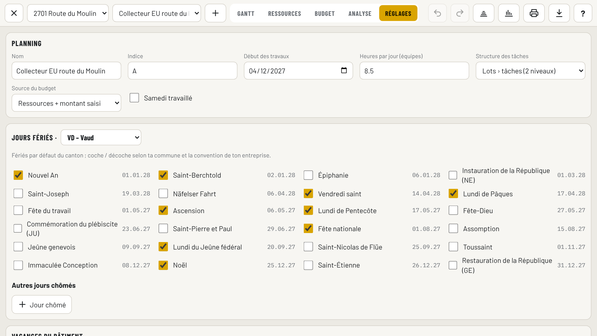
Réglages : canton et fériés cochables, avec la prochaine date de chaque férié.
À vérifier une foisLes fériés proposés par canton sont une base : contrôle-les pour tes communes (certains fériés ne valent que dans une partie du canton) et décoche / ajoute ce qui manque.
2. Saisir les tâches
Lot pour chaque grande partie, puis sélectionne le lot et ajoute ses Tâches.
Dans la fiche : nom, type (tâche / jalon), durée en jours ouvrés, début au plus tôt (seulement si vraie contrainte), zone (facultatif, pour imprimer par zone).
Une nouvelle tâche est liée automatiquement (FS) à la tâche sélectionnée : vérifie le lien.
Couleur de la barre (en bas de la fiche, aussi pour un jalon ou un lot) : Auto = couleurs normales (bleu, rouge critique, vert terminée) ; sinon une des 10 couleurs ou la pastille arc-en-ciel pour une couleur libre. Pratique pour repérer un corps de métier ou une entreprise. Une tâche colorée qui est critique garde un contour rouge. Pour plusieurs tâches d’un coup, et pour le texte à côté de la barre : bouton Style (voir plus bas).
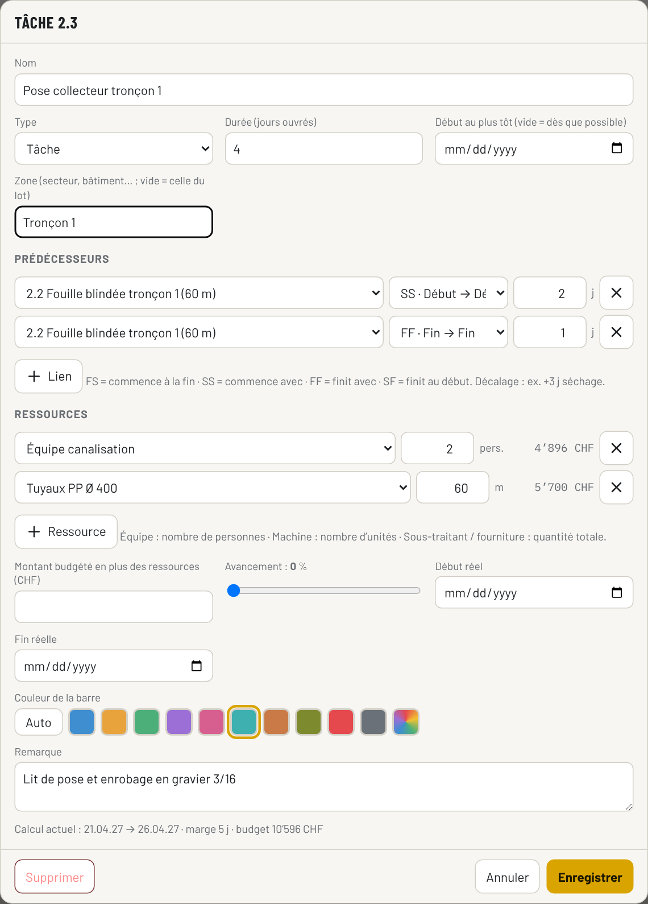
Fiche d’une tâche : deux liens vers la même fouille (SS+2 et FF+1), deux ressources avec leur coût, couleur de barre choisie (turquoise).
3. Lier
Dans la fiche : « + Lien », choisir la tâche, le type (FS, SS, FF, SF) et le décalage en jours ouvrés (négatif = avance).
Au stylet ou à la souris : tirer depuis le petit rond au bout de la barre jusqu’à une autre barre → lien FS (sur tablette, le rond apparaît quand la barre est sélectionnée).
Bouton Lier : lien FS avec la tâche du dessus.
La colonne Préd. affiche les liens : 2.2SS+2 ; 2.2FF+1.
Sélection multiple et style des barres
Sélectionner plusieurs tâches :
Tablette : bouton Sélection (case cochée) → une case apparaît devant chaque tâche ; touche les lignes (ou les barres) à prendre. Touche à nouveau pour enlever.
PC : Ctrl+clic ajoute / enlève une tâche, Maj+clic prend toutes les tâches entre la tâche sélectionnée et celle cliquée, Ctrl+A prend tout le planning.
Le nombre de tâches choisies s’affiche dans la barre ; ✕ ou Échap désélectionne tout.
Bouton Style : une seule fenêtre pour toutes les tâches choisies (ou la tâche sélectionnée seule).
Couleur de la barre : Auto, 10 couleurs ou couleur libre (pastille arc-en-ciel).
Position du texte : à droite (défaut), à gauche, au-dessus, en dessous ou dans la barre (texte coupé si la barre est trop courte).
Texte affiché : comme la mise en page, nom, ressources, nom + ressources, nom + dates, dates, durée ou rien. Sur un lot, le texte n’apparaît que s’il est choisi ici.
Texte normal ou gras, couleur du texte, hauteur de la barre (fine, normale, épaisse), remplissage plein ou hachuré (ex. travaux d’un sous-traitant, option).
Quand les tâches choisies ont des réglages différents, le champ affiche « inchangé » : seuls les champs modifiés sont appliqués. Tout par défaut efface couleur et style des tâches choisies.
Le style est enregistré avec le planning (tablette et PC) et repris dans le PDF et l’impression. Annuler (Ctrl+Z) défait une application de style.
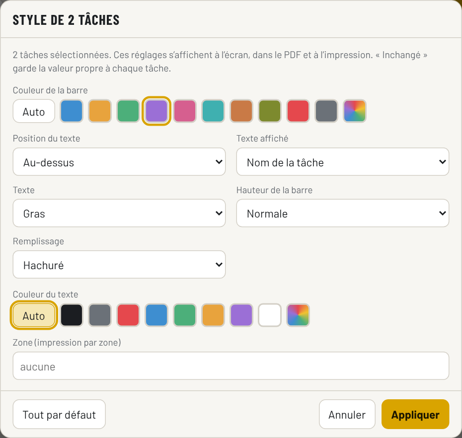
Style de 2 tâches : couleur violette, nom au-dessus de la barre, en gras, barre hachurée.
4. Ajuster les barres
Déplacer une barre (stylet / souris) = poser un « début au plus tôt ». Si les liens l’empêchent, BauGest l’indique.
Tirer le bord droit = changer la durée.
Doigt = faire défiler, jamais déplacer. Toucher une ligne la sélectionne, la toucher encore ouvre la fiche (souris : double clic).
Une tâche commencée ne se déplace pas : change sa date de début réel dans la fiche.
Dans chaque fiche de tâche : + Ressource, quantité (personnes, unités ou quantité totale). Le coût s’affiche à droite.
Onglet Ressources : clique une ressource pour voir sa charge ; Proposer un lissage si barres rouges.
6. Référence, suivi et budget
Référence › Figer avant le démarrage.
Pendant le chantier : fiche de la tâche › avancement, début réel, fin réelle ; ou onglet Budget › Réalisé.
Onglet Budget : choisis la date « Situation au » et lis PV, VA, CR, SPI, CPI.
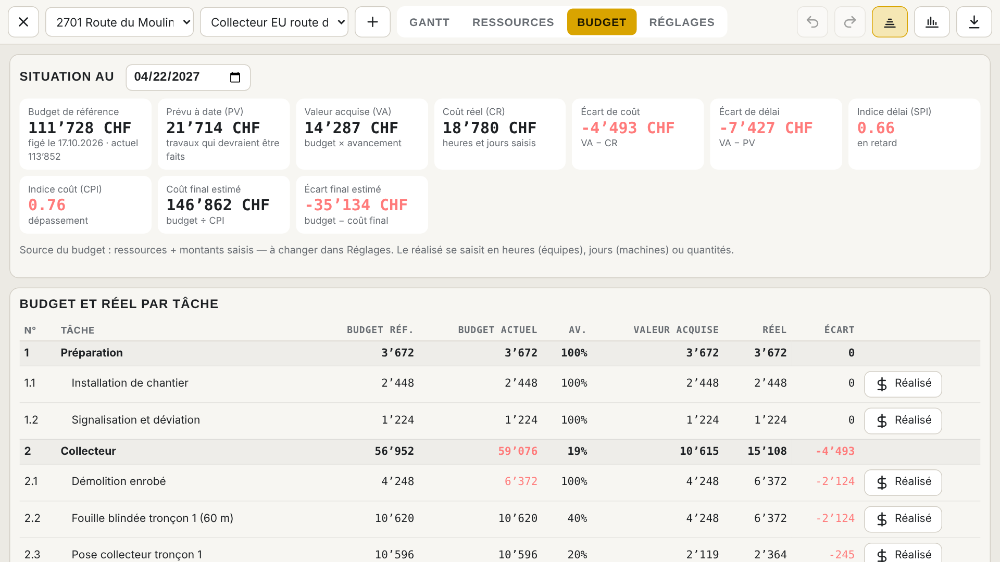
Onglet Budget : indicateurs à la date choisie et tableau par tâche (budget de référence, actuel, avancement, valeur acquise, réel, écart).
Mise en page
Réglages › Mise en page › Modifier la mise en page… (ou Exporter › Mise en page) : colonnes du tableau (affichées à l’écran et/ou dans le PDF, ordre), couleurs des barres, texte à côté des barres, hauteur des lignes, taille du texte, zoom à l’ouverture, liens / référence / week-ends ; pour le PDF : A4, A3, A2, A1 ou A0 (format proposé par défaut à l’impression), paysage ou portrait, titre, période (tout le chantier, du … au …, 3 semaines dès aujourd’hui), légende, cartouche, logo (entreprise du chantier, logo du chantier, logo choisi ou image importée), remarque en bas de page. Aperçu PDF montre le résultat sans enregistrer.
« S’applique à » : modèle commun (tous les plannings, tablette et PC) ou ce planning seulement. « Revenir au modèle commun » supprime la mise en page propre d’un planning.
Imprimer
Bouton Imprimer (barre du haut) : choisis le format, l’orientation et si besoin Ajuster à la page pour cette impression (proposés d’après la mise en page), puis Imprimer.
PC : une fenêtre « Aperçu avant impression » montre le PDF. Imprime avec l’icône imprimante en haut à droite de l’aperçu (ou clic dans l’aperçu puis Ctrl+P). Boutons Ouvrir dans un onglet et Télécharger (pour l’envoyer à une imprimerie).
Tablette : la fenêtre d’impression d’Android s’ouvre directement.
Imprimer une partie du planning
Dans la fenêtre Imprimer (et en haut du menu Exporter pour le PDF) :
Période : comme la mise en page, tout le chantier, du … au …, semaines dès ce lundi (1 à 8, pratique pour la séance de chantier) ou un mois. « Seulement les tâches de la période » enlève les lignes hors de ces dates.
Tâches : toutes, lots choisis (cases à cocher), zones choisies ou tâches sélectionnées (proposé d’office si plusieurs tâches sont cochées dans le Gantt). Les lots parents restent affichés comme titres.
Zones : champ Zone dans la fiche d’une tâche (ex. Bâtiment A, Tronçon 2, Secteur nord) ; la zone d’un lot vaut pour ses tâches. Pour plusieurs tâches d’un coup : sélection puis bouton Style › Zone. Colonne « Zone » disponible dans la mise en page.
Le choix vaut pour cette impression seulement ; il est rappelé dans le sous-titre du PDF (ex. « Période 01.04.2027 – 30.04.2027 · Zone : Tronçon 2 »).
Planning trop long ? Choisis A2, A1 ou A0 : le texte garde sa taille, la page montre beaucoup plus de jours. Il faut une imprimante qui prend ce format (traceur, imprimerie) ; sur une imprimante A4 le navigateur réduit la page. Ou coche Ajuster à la page : tout le planning tient sur une seule feuille du format choisi, réduit autant qu’il faut (le pourcentage s’affiche ; en dessous de 50 % le texte devient petit, prends alors un format plus grand). Autre solution : Mise en page › Période « du … au … » pour imprimer une partie seulement.
Couleurs du Gantt
rouge
Tâche critique (marge 0) ; flèches rouges = liens critiques
bleu
Tâche avec marge
vert
Tâche terminée
gris fin
Référence
contour orange
Tâche en retard (⚠ dans le tableau)
pointillé jaune
Aujourd’hui
noir
Lot
couleur choisie
Couleur propre de la tâche (fiche › Couleur de la barre) ; contour rouge si elle est critique
◆
Jalon (affiché en fin de journée, comme dans MS Project)
colonnes grises
Week-ends, fériés, vacances (survoler pour voir le nom)
Raccourcis clavier (PC)
↑↓
Tâche précédente / suivante
Entrée
Ouvrir la fiche
Inser
Nouvelle tâche
Suppr
Supprimer (aussi plusieurs tâches)
Ctrl+clic / Maj+clic
Ajouter une tâche / une plage à la sélection
Ctrl+A
Sélectionner tout
Tab / Maj+Tab
Mettre dans le lot / remonter
Ctrl+Z / Y
Annuler / rétablir
Échap
Désélectionner, sinon fermer la fenêtre ou le planning
Enregistrement
Tout est enregistré automatiquement sur l’appareil puis dans le Drive (<Chantier>/Planning/<nom>.json), avec à côté une copie MS Project toujours à jour (<nom>.xml, à ouvrir dans Project : Fichier › Ouvrir). Sur le PC, un double clic sur l’un de ces deux fichiers dans l’explorateur ouvre le planning ; un autre fichier .xml MS Project propose l’import. Sans réseau, tu continues à travailler ; l’envoi au Drive se fait au retour du réseau. L’état est affiché en haut (« Enregistré sur le Drive »). Évite de modifier le même planning sur la tablette et le PC en même temps : la dernière version enregistrée l’emporte.
Chapitre 11Cas pratique 1 · génie civil
Remplacement d’un collecteur EU (2 × 60 m) et réfection de la chaussée, canton de Vaud, début lundi 12.04.2027. Durées, tarifs et quantités d’exemple.
N°
Tâche
Durée
Préd.
Ressources
1
Préparation
1.1
Installation de chantier
2 j
—
Équipe ×2
1.2
Signalisation et déviation
1 j
1.1
Équipe ×2
2
Collecteur
2.1
Démolition enrobé
2 j
1.2
Équipe ×2, pelle
2.2
Fouille blindée tronçon 1
5 j
2.1
Équipe ×2, pelle
2.3
Pose collecteur tronçon 1
4 j
2.2SS+2 ; 2.2FF+1
Équipe ×2, tuyaux 60 m
2.4
Remblayage tronçon 1
3 j
2.3SS+2 ; 2.3FF+1
Équipe ×1, pelle
2.5
Fouille blindée tronçon 2
5 j
2.2
Équipe ×2, pelle
2.6–2.7
Pose et remblayage tronçon 2
4 j / 3 j
comme tronçon 1
idem
2.8
Inspection caméra
1 j
2.4 ; 2.7
montant 1 200
3
Chaussée
3.1
Fondation en grave
3 j
2.8
Équipe ×3, pelle
3.2
Bordures
3 j
3.1SS+1
Équipe ×2
3.3
Enrobé couche de base
1 j
3.1 ; 3.2
Sous-traitant 60 %
3.4
Enrobé couche de roulement
1 j
3.3FS+5
Sous-traitant 40 %
3.5
Marquage et repli
1 j
3.4
Équipe ×2
3.6
◆ Route rendue au trafic
0 j
3.5
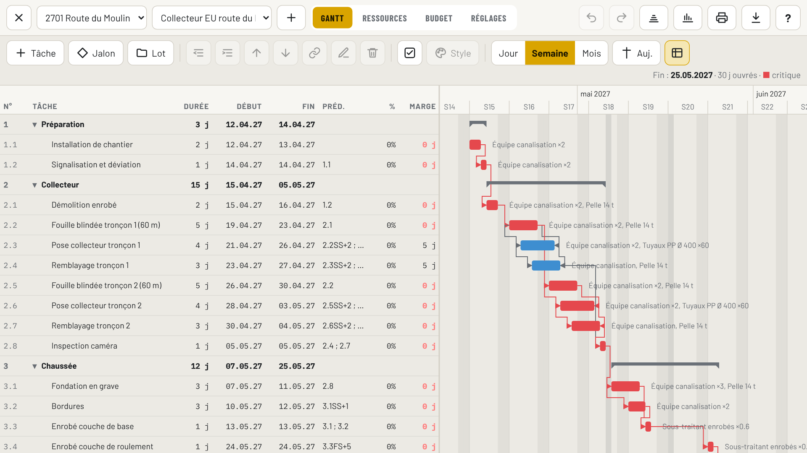
Résultat : fin le 25.05.2027, 30 jours ouvrés. La pose et le remblayage du tronçon 1 ont 5 jours de marge (bleu).
Ce qu’il faut remarquer
Travail en chenille : la pose démarre 2 jours après la fouille (SS+2) et finit 1 jour après elle (FF+1). Avec des FS, le collecteur durerait beaucoup plus longtemps.
Fériés : l’Ascension (06.05.2027) et le lundi de Pentecôte (17.05.2027) sont sautés automatiquement ; la couche de roulement (FS+5 après la couche de base) tombe le 24.05.
Chemin critique : il passe par les fouilles, le tronçon 2 et toute la chaussée. Le tronçon 1 (pose, remblai) n’est pas critique.
Surcharges : la pelle est demandée deux fois les 23.04, 26–27.04 et 30.04 (fouille d’un tronçon + remblai de l’autre), et l’équipe (4 personnes) dépasse certains jours.
Décision : lisser ou renforcer ?
Le lissage proposé repousse le remblayage 1 de 9 jours, le remblayage 2 de 1 jour et les bordures de 2 jours : fin le 02.06.2027 (+6 jours).
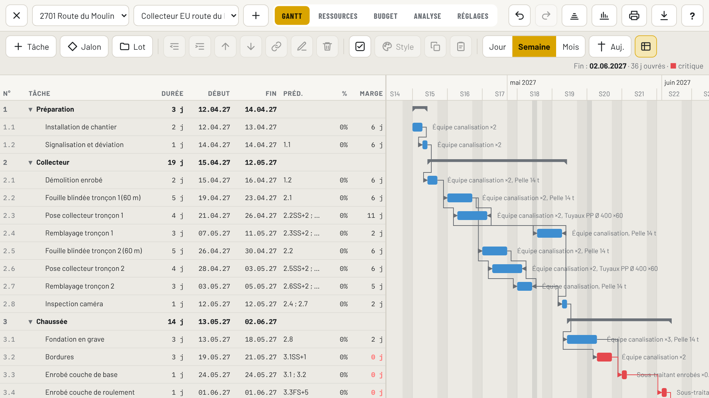
Après lissage : plus de surcharge, mais 6 jours de plus.
Alternative : une mini-pelle pour les remblayages (nouvelle ressource « Mini-pelle », affectée aux tâches 2.4 et 2.7 à la place de la pelle) et une 5e personne les jours de pointe. Coût : quelques jours de location et de main-d’œuvre, à comparer à 6 jours d’installations, de signalisation et d’encadrement. C’est le genre de décision que le planning doit t’aider à prendre avant le chantier.
Suivi à mi-parcours
Situation au 22.04.2027 : la démolition a pris 3 jours au lieu de 2. L’onglet Budget donne SPI 0,66 et CPI 0,76 (voir figure du chapitre 10) : le chantier est en retard et plus cher que prévu pour ce qui est fait. Le coût final estimé dépasse le budget de référence : il faut agir maintenant (renfort sur la fouille du tronçon 2, critique) et l’annoncer si la fin est touchée.
Chapitre 12Cas pratique 2 · bâtiment
Villa individuelle, gros œuvre, canton de Vaud, début lundi 01.03.2027. Durées et tarifs d’exemple.
N°
Tâche
Durée
Préd.
Ressources / budget
1.1
Installation de chantier
3 j
—
montant 8 000
1.2
Fouille en pleine masse
6 j
1.1
montant 24 000 (sous-traité)
2.1
Béton maigre
1 j
1.2
Maçons ×3, béton 8 m³
2.2
Radier : coffrage et armature
4 j
2.1
Maçons ×4, grue
2.3
Radier : bétonnage
1 j
2.2
Maçons ×4, béton 45 m³
2.4
Murs sous-sol
10 j
2.3FS+2
Maçons ×4, grue, béton 38 m³
2.5
Dalle sur sous-sol
6 j
2.4
Maçons ×5, grue, béton 42 m³
3.1
Murs rez-de-chaussée
8 j
2.5FS+3
Maçons ×4, grue
3.2
Dalle toiture
6 j
3.1
Maçons ×5, grue, béton 40 m³
3.3
Isolation périphérique et remblayage
4 j
2.5FS+5
montant 16 000
3.4
◆ Gros œuvre terminé
0 j
3.2 ; 3.3
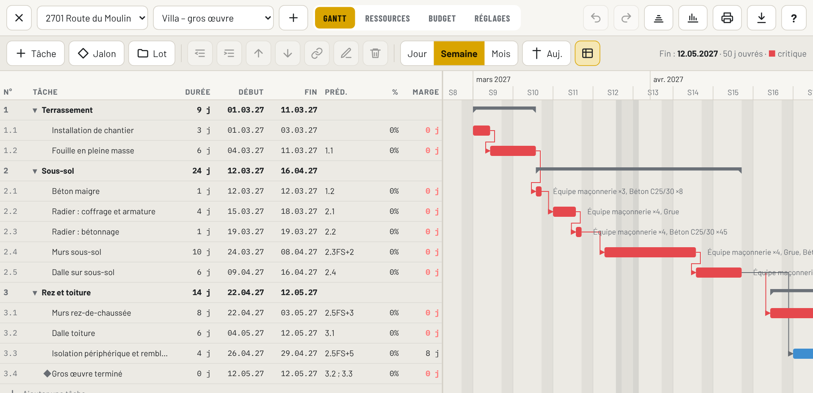
Résultat : gros œuvre terminé le 12.05.2027, 50 jours ouvrés, budget 197 920 CHF (exemple).
Ce qu’il faut remarquer
Délais techniques dans les liens : FS+2 après le bétonnage du radier, FS+3 après la dalle (valeurs à fixer avec l’ingénieur selon le béton, la saison et l’étayage).
Pâques : Vendredi saint (26.03) et lundi de Pâques (29.03) tombent pendant les murs du sous-sol : la tâche s’allonge en calendrier, pas en jours ouvrés.
Une seule grue (capacité 1) : les tâches qui l’utilisent se suivent, donc pas de surcharge. Si tu chevauches murs et dalle pour gagner du temps, la grue passera en rouge.
Isolation et remblayage a 8 jours de marge : c’est elle qu’on décale si l’équipe manque, pas les dalles.
Bâtiment = beaucoup de FS (étage par étage). Pour gagner du temps : découper par zones (zone A / zone B) et lier en SS, ou préfabriquer.
Aller plus loin
Ajoute un lot « Second œuvre » avec les sous-traitants (ferblanterie, fenêtres, sanitaire, électricité, chape, plâtrerie…) liés au jalon « Gros œuvre terminé » ou « Hors d’eau », et des jalons pour les commandes à long délai (fenêtres, escaliers préfabriqués) placés avant la tâche qui en a besoin, avec un lien FS négatif si nécessaire.
Chapitre 13Check-lists
Avant de figer la référence
Date de début et canton justes, fériés vérifiés
Vacances du bâtiment saisies
Toutes les tâches ont un prédécesseur et un successeur
Aucune tâche de plus de 15 jours sans raison
« Début au plus tôt » seulement pour de vraies contraintes
Délais techniques dans les liens (décalages)
Jalons contractuels présents et à la bonne date
Chemin critique logique
Ressources affectées aux tâches importantes
Pas de surcharge (ou décision prise : renfort / lissage)
Budget total cohérent avec la soumission
Indice A, export PDF A3 envoyé
À chaque mise à jour
Débuts et fins réels saisis
Avancement % mesuré (pas estimé au temps)
Durées restantes corrigées
Réalisé saisi jusqu’à la date
Fin comparée à la référence
Nouvelles tâches critiques repérées
Surcharges des 3 prochaines semaines
Retard annoncé par écrit si la fin bouge
Indice changé si le planning est transmis
Avant une séance
Planning à jour, PDF A3 imprimé
Écart de fin et causes
Décisions attendues des autres, avec dates
3 semaines à venir présentées
Chapitre 14Aide-mémoire
Liens
FS
B commence à la fin de A
SS+n
B commence n j après le début de A
FF+n
B finit au plus tôt n j après la fin de A
SF
B ne finit pas avant le début de A
FS+n / FS−n
Attente / chevauchement de n j ouvrés
Formules
Durée
Quantité ÷ (rendement × équipes)
Marge
Au plus tard − au plus tôt
SPI
VA ÷ PV (< 1 = retard)
CPI
VA ÷ CR (< 1 = dépassement)
Coût final
Budget ÷ CPI
Équipe
pers. × j × h/j × CHF/h
Machine
u. × j × CHF/j
Couleurs
Critique
Avec marge
Terminée
Référence
En retard
Couleur choisie (contour rouge = critique)
Gestes (tablette)
Doigt
Défiler, toucher = sélectionner, 2e toucher = fiche
Stylet sur barre
Déplacer
Stylet bord droit
Changer la durée
Stylet depuis ●
Créer un lien FS
Retour Android
Ferme la fenêtre, puis le planning
Rattraper un retard
1 Renforcer le critique · 2 Chevaucher (SS/FF) · 3 Ouvrir un 2e front · 4 Samedi / horaires · 5 Changer de méthode — et l’annoncer par écrit.
Chapitre 15Glossaire
Au plus tôt / au plus tard
Dates de début possibles d’une tâche : la première possible, et la dernière qui ne retarde pas la fin.
Avancement %
Part du travail physiquement réalisée.
Chemin critique
Suite de tâches à marge nulle qui fixe la date de fin.
Coût réel (CR)
Somme des heures, jours, quantités et montants saisis, valorisés aux tarifs.
Décalage
Jours ouvrés ajoutés (attente) ou retirés (avance) à un lien.
Début au plus tôt
Contrainte : la tâche ne peut pas commencer avant cette date.
Jalon
Événement de durée nulle (début, réception, mise en service).
Jours ouvrés
Jours travaillés : sans week-ends (samedi en option), fériés du canton, jours chômés et vacances.
Lissage
Décalage de tâches pour que la charge ne dépasse pas la capacité des ressources.
Lot
Groupe de tâches ; ses dates et son coût sont calculés.
Marge (totale)
Jours dont une tâche peut glisser sans retarder la fin du chantier.
Prévu à date (PV)
Budget du travail qui aurait dû être fait à la date d’état.
Référence
Copie figée des dates et du budget, pour comparer.
Surcharge
Jour où une équipe ou une machine est demandée plus que sa capacité.
Valeur acquise (VA)
Budget du travail réellement fait (budget × avancement).
AnnexeMes rendements
Remplis ce tableau avec tes chiffres (rapports journaliers, chantiers terminés). Note les conditions (terrain, profondeur, accès) : un rendement n’a de sens que dans son contexte. Mets-le à jour après chaque chantier.
Travail
Unité
Équipe (pers. + machines)
Rendement / jour
Conditions / remarques
Chantier, date
Démolition enrobé
m²
Fouille en tranchée blindée
m
Fouille en pleine masse
m³
Pose collecteur Ø …
m
Chambre de visite
pce
Remblayage compacté
m³
Fondation en grave
m²
Bordures
m
Coffrage murs
m²
Coffrage dalle
m²
Armature
t
Bétonnage (pompe)
m³
Maçonnerie
m²
Manuel Planning BauGest · octobre 2026 · les valeurs des exemples (durées, tarifs, quantités) servent à illustrer la méthode et ne sont pas des valeurs de référence.